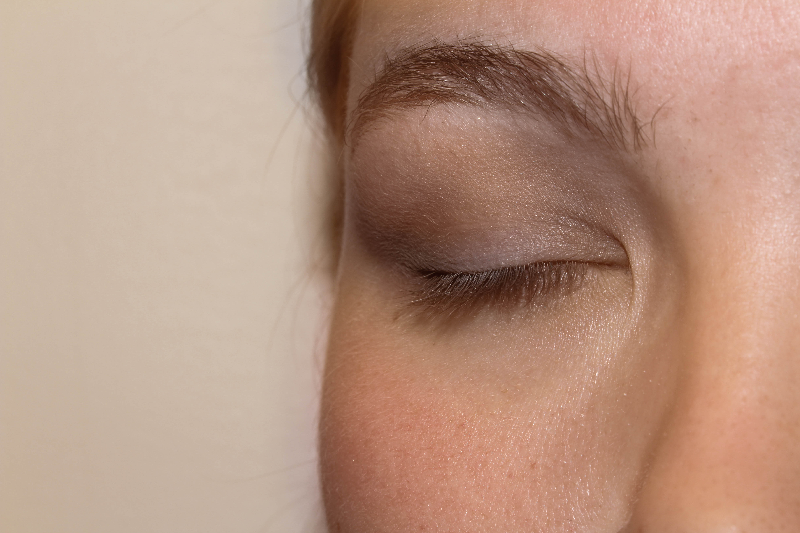
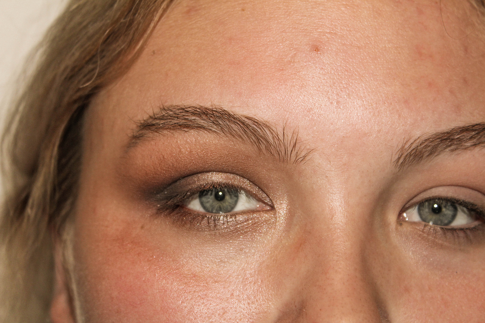
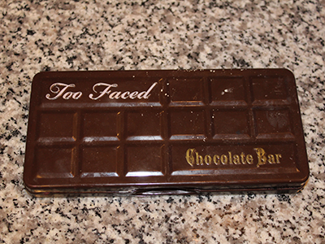
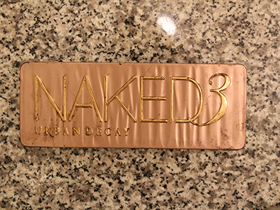
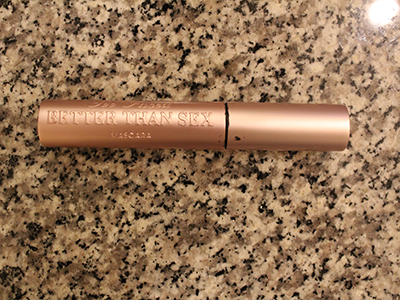

Daytime Smokey Eyes
Published: Septmeber 21st, 2017
This look brings out your eyes in a less daunting way. By highlighting and defining without creating an intimidating look. It causes a more natural definition to your eyes while still causing them to pop. By empowering you to be your best self it stays true to who you naturally are. Try this style for a more casual outcome while staying in the same routine as the nighttime steps. The best part is that it is very easy to convert to the nighttime look once you are ready to go out.
Materials
- Good Ligthing
- Mirror
- Eyeshadow Primer
- Eyeshadow Burshes
- Eyeshadow Palette
- Mascara
Steps
-

- Good lighting in front of your mirror
- Cover eyelids with eyeshadow primer
- Apply a neutral tone on the lid of the eye 
- On the inner corners of your eyes dab on a highlighting color
- Smudge a rusty color eyeliner/eyeshadow into lash line
- Apply mascara
Products
-

Chocolate Bar by Too Faced
-

Naked Palette by Urban Decay
-

Porefessionals Primer by Benefits
-

Better Than Sex Mascara by Too Faced
-

Enhanced Eye Set by Real Techniques
-

Perfect Eyes Eyeliner by Almay